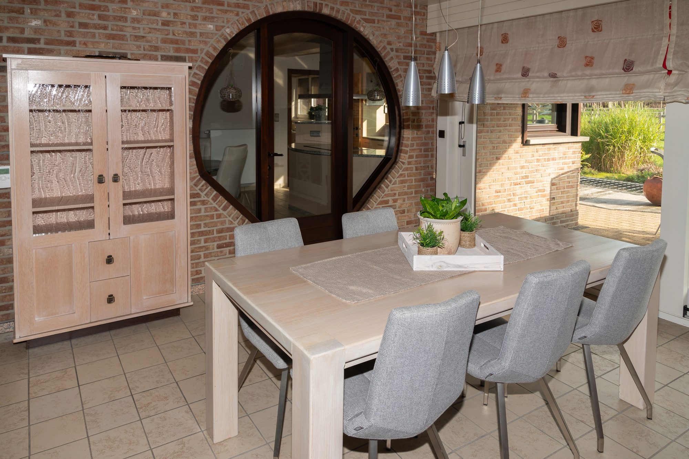
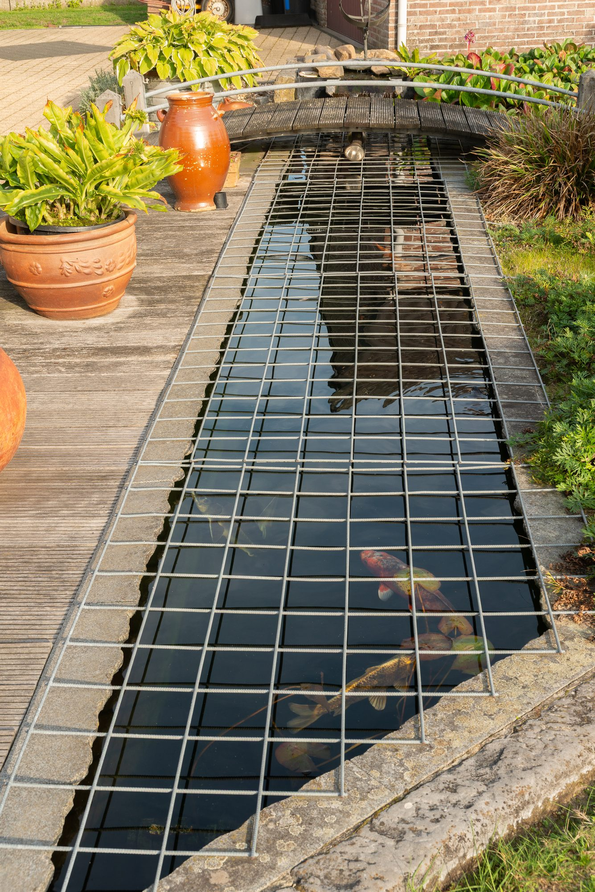
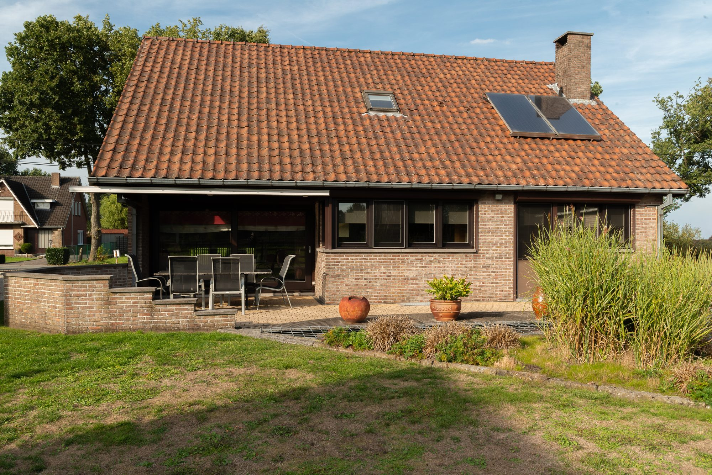

Een persoonlijke getuigenis
„Het is een plek waar we elke dag opnieuw tot rust kwamen na een drukke dag.”
De eerste zonnestralen vallen door de grote raampartij naar binnen en schuiven langzaam over de tegelvloer mee. Koffie aan de eettafel, de schuifdeur open, en de dag begint zonder haast. Dat is het ritme dat dit huis oplegt — en waar we nooit aan gewend zijn geraakt, in de goede zin.

De vijver met de koi is het hart van onze zomers geweest. Het geluid van het water werkt bijna meditatief, en het brugje is al door drie generaties kleinkinderen overgestoken. De tuin is omheind, dus kinderen en honden kunnen gewoon hun gang gaan.

Als het buiten kort en donker wordt, verhuist het leven naar binnen. De verlaagde zitput is precies groot genoeg om samen te zijn en klein genoeg om geborgen te voelen. En na een koude dag is er nog altijd de sauna — op tien stappen van de woonkamer, zonder afspraak.

De straat is rustig, maar je staat zo op de fiets richting het groen van Noord-Limburg. Winkels en scholen zijn dichtbij, de Nederlandse grens ligt om de hoek, en toch hoor je thuis vooral vogels. Die combinatie is zeldzamer dan ze klinkt.

We laten de woning graag zelf zien. Een rondleiding is vrijblijvend en snel geregeld.